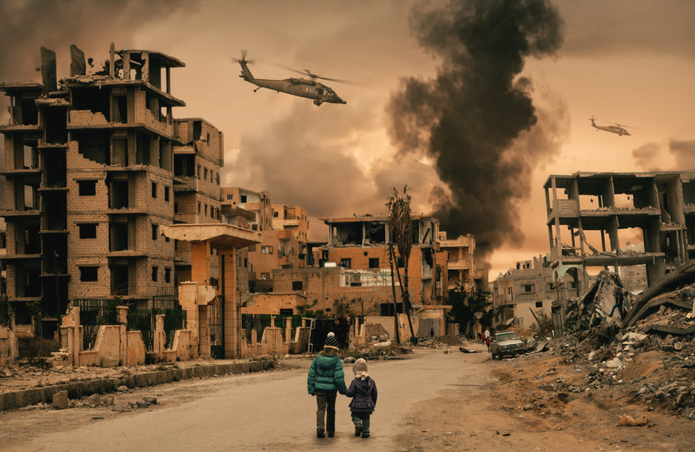

Study on the Extension of a Lower Order Sentient Lifeform
By Harini Padmanaban and Leela Praneeth
Three thousand galactan years have passed since the extinction of
Earth- a small planet with low-level forms of civilisation- and
Hes, a student of the prestigious Intergalactic Institute of
Greatness would like nothing more than his tedious assignment of
the planet to disappear. Procrastination, palaver, and plagiarised
perspectives were Hes' newfound life principles.
$%^@*(loosely translates to Hes) hated their life. Being a university
student at the prestigious Intergalactic Institute of Greatness had
its perks-guaranteed success for their first regeneration cycle and a
permanent path for future ventures into amassing great
fortunes-however, their patience was wearing thin today. Today, their
sadistic, downright horrible excuse for a professor decided to assign
an assignment worth 20 percent of their final grade-ultimately of
paramount importance. The overall topic was simple and general enough-
an essay on the downfall of a planet with no extant sentient species.
Simple enough. The list of planets to be assigned was displayed on the
Galactan-board, where Hes' eyes skimmed over until they stopped. You
see, the planet of choice for this class depended greatly on pure
luck, and when it came to that, Hes was just hopeless. When they
picked up the galacto-signal from the assessment station, they had
their antenna wiggle with despair as they scanned it over and over
again. "Earth".
Maybe if Hes stared at the word long enough, it would make it
disappear? It did not work. Hes opted for another method. Perhaps
banging their head repeatedly against the desk would will the task
away. Alas, to no avail. It only left them with a throbbing headache
and an angry red bump ordaining their forehead. There was only one
solution remaining. To procrastinate. Deeming that to be a suitable
alternative, Hes successfully evaded all responsibility for the task
ahead of them.
Two millennia passed by at the speed of light. How unfortunate indeed.
Hes now had precisely 32 galactan-hours remaining until their essay
was due. To put it lightly, they were royally screwed. You see, the
knowledge on Earth was minimal, and Hes frankly did not have the time
or energy to open and read a book from the tremendous
Intergalactic Library of Knowledge. Hes decided it was time
to put the notorious phrase to use, "fake it till you make it". They
opened their galactop and began.
Planet AQ972 of Universe-354, known colloquially by its past
inhabitants as "Earth", is a primitive planet with low levels of
civilisation. The planet was considered minuscule compared to other
similar planets in the Milky-way galaxy. Its inhabitants (predominantly a considerably higher level species known as
"humans”) are recorded to be microscopic, varying between 0.4
to 0.7 standard microgalactometers in height. While other forms of
Earthian life existed near the end of the planet, few ceased to
exist except for the aforementioned humans.
Perfect- Hes thought. The first paragraph was over, with only 1700
more words to go. Brilliant. That was all Hes knew about Earth,
everything they could remember from their elementary school education.
With little time left to spare, Hes opened the Galactopedia on their
Galactop, and while it wasn't the most trusted source to
exist, they were sure they could get at least bits and pieces of
information to aid them in writing. The rest...was a
fill-in-the-blanks problem.
According to Galactopedia, Hes' only source of salvation at this
point, the calamity that brought the end to civilisation on Earth,
was...a nuclear bomb? What on earth was that? After
extensive searching on galactoogle, Hes found that it was an explosive
device that released precisely 300 galocalories of energy.
That barely covered one-third of Hes' hourly energy requirements. So
clearly, this nuclear bomb thingy was simply breakfast- a small,
non-filling breakfast. Interesting...breakfast killed the human people. A critical point to be noted indeed, Hes made sure to include this
finding in his essay.
The human creatures also seemed to fight in recreations known as
‘wars'. According to Galactopedia,
wars were games held between divisions of the planet, known
as countries and frequently occurred as a game of jest and
sportsmanship. How very peculiar...Hes thought to themselves.
As a matter of fact, Hes concluded that this nuclear bomb contraption
was used in one of these game war events, effectively killing
everyone. Earth was proving to be as finicky of a planet as he
initially thought it would be...troublesome indeed. Clearly, low-level
civilisations should stay away from activities, for they had such dire
consequences- Hes decided.
However, when Hes searched for the origin of the civilisation of the
Aliens from Earth and their mannerisms, they encountered a roadblock.
There was simply no information to be found. Yet, their
professor had demanded that this segment exists in the essay-that was
when Hes thought of an easy way out of this predicament: they would
simply have to plot murder. Against their professor. For the next
twelve galactan-hours, Hes extensively researched methods to
kill and bury a body without raising suspicion. It was a productive
time spent, indeed. Until it wasn't. Hes blinked up at the clock and
felt their stomach drop. Only 5 galactan-hours remained until
their essay was due, and they still hadn't found an effective way to
discard their abhorrent professor or finish their essay. Hes proceeded
to bang their head on his desk once more. This wasn't proving to be
very effective. The time had come for Hes to charm their way out of
this nonsense.
When Hes started getting back into it, they noticed something odd.
Earth’s last major extinction event though quick, had been
building up for over a century. Something changed suddenly in the
“wars”. As they called it, a significant change in climate
was plaguing the planet's atmosphere. All the information on earth was
extracted from their propaganda machines, which had all the data
uploaded to the archives. There were rudimentary translations, but the
interpretation was difficult, even for elite Alien relations and
communications researchers. The roadblock they faced was discrepancies
in the data presented and decisions taken. Hes scanned the data
multiple times, hoping to find a galacto-nugget of truth. Then the
realisation hit them like a cargo ship. They were overestimating the
capability of these aliens.
Hes took cognition boosters and worked on their assignment. The humans
knew the anomalies in their ecology but pushed them aside and focussed
more on their petty quarrels.
They could’ve stopped their extinction if only they had decided
to take action, Hes couldn’t comprehend the low level of
critical and logical cognitive capabilities these primitives
possessed. After the incomprehensible time that went into the
gruelling task of researching and finally finishing the assignment,
Hes was horrified to see that he had missed the deadline. Hes was
ready to step out of the station and lose consciousness, drifting
eternally in space. But they still wanted to present their discovery
to the professor.
After Hes’ presentation to the professor in the Scientific
conference ship, they expected proud feelings and encouraging remarks,
but all they got was a laugh and a backhanded compliment.” Only
you could estimate the level of procrastination these aliens
possessed,” The professor communicated. “You are still
getting a Galacto-Backlog, though.”
Oil And Blood
By XYZ
This war is now behind us. Ahead of us is the difficult task
of
securing
a potentially historic peace. Tonight though, let us be
proud
of what we have accomplished. Let us give thanks to those who
risked
their lives. Let us never forget those who gave their lives.
May
God bless our valiant military forces and their families, and
let
us all remember them in our prayers.
Good night, and may God bless the United States of America.
-George H. W. Bush on February 27, 1991

Zaid was scared and angry, primarily at the soldiers that changed
his life for the worse in the last year. He could no longer count
the number of birthdays he missed, a celebration that now seemed
long forgotten. He could no longer count the number of times his
father, a usually resolute, unrelenting man, cried in what he could
only describe as despair- an emotion he had difficulty grappling
with. His mother remained a shelter in the storm, reassuring him
through this difficult time. Nonetheless, if he looked closely
enough, he saw what resembled a flinch in her demeanour whenever
soldiers passed by or a plane flew overhead.
He was beginning to find it increasingly tricky to understand their
situation. When he got into fights with his friends, it resulted in
hasty squabbles that led to cold shoulders or a slight reprimand
from an adult. Despite his dad trying to explain their situation to
him multiple times, all he was left with was a puzzling
afterthought. A war was seemingly when whole countries fought among
themselves- but he was left clueless by their methods and
reasons.
His brother hadn’t been home since before all of this
started; he believed it was due to Hussein’s admiration of
President Saddam- his admiration for his brother grew when he
thought of him fighting as a true patriot. When Zaid was just a kid,
he remembered his brother playing soccer with a squishy ball, his
nimble figure moving swiftly across the field. Although his brother
was much older, he remembered running circles around Hussein, his
annoyed face making Zaid happier than when his mother made
Quzi.
The foreigners scared Zaid. They looked nothing like any people he
knew. They reminded him of models on the posters of stores that sold
expensive products. If these boogeymen could scare his mother, he
trembled in fear, thinking how they could threaten him much more.
Their desert pattern, funny hats and glasses too big on their faces
startled Zaid- who found the look unexpected for boogiemen. The
contrast made them even more unsettling. He wondered who those
soldiers worked for. Did they have a fearless leader like Saddam,
fighting side by side valiantly with his brother, or were they an
aimless gang of bullies, similar but much scarier than the ones Zaid
interacted with frequently?
The bullies were the worst. They were mean, rude and for no reason
to boot. In fact, bullies disgusted Zaid more than anything else he
could think of. Their bulkier, intimidating figures towered over
Zaid, making him cower in fear and disgust. But the school bullies
barely made an impact in front of the soldiers. Their terrorising
presence no longer surfaced as the soldiers glared down at Zaid,
their eyes boring into him. Zaid struggled to understand the sad
look some of them seemed to have. Were monsters in the bedtime
stories ever sad?
Zaid saw other kids crying and clutching their parents. Were they
not angry? They looked like they would not even dream of leaving
their parents' side. However, Zaid would like to give these
strangers an earful if given a chance. His mom always stopped him,
and surprisingly something in the back of his mind made him think
listening to her was a good idea. He looked at school for
companionship after his brother left. The school was his safe space
despite the bullies. Though his parents were lovely, they were
distant from him for a short while, even before they first had to
leave the house. They had this gloomy mood hanging over constantly
as if they knew what was coming. He missed most of the cartoons that
week, his parents hogging the TV to watch "news". The
monotone speeches bored Zaid.
The highway generally meant a trip, and trips always made Zaid
happy. But when they passed Highway 80 this time, he was speechless
at its state. There was more traffic than he had ever experienced,
but he had a feeling this traffic was never going to move. Most of
the vehicles were in various stages of destruction. He could not be
sure, but some glimpses of human forms were lying near the wreckage.
His mom wrapped her arms around him and led him through, closing his
eyes a few times.
Zaid hated waiting, and this was the worst he had ever endured. He
was tired of waiting for the fighting to stop. He was tired of
waiting for things to return to the way they were. But most
importantly, he was tired of being kept out of the loop; all
decisions were made by his parents in whispers and muffles. This
ordeal was more brutal than the exams at school.
He missed his friends. He missed a lot of things now that he
thought about it. There was this now familiar gnawing at the back of
his mind. He tried to ignore it and go to sleep. His mom would not
be happy that he was lost in thoughts and is now past bedtime. He
was about to drift to sleep when….BOOM. He jolted
awake…BOOM, it was closer this time…BOOM. His mom
rushed towards him and hugged him tight, whispering in his ear how
everything would be alright. But all Zaid had in his mind at that
moment was a horrific realisation. He was ignoring and suppressing
parts of his experiences. He remembered the soldiers shooting his
neighbours, blood unable to stay within the lines of the body and
splashing everywhere. He remembered his dad breaking the news of his
brother's death. He remembered seeing his destroyed school. He
remembered the collapse of their home amidst the chaos of pops akin
to fireworks and flashing lights. He clutched his mom's sleeves
and buried his face in her lap. Zaid wanted to curl up into a ball
and turn off his senses. He felt weird; he felt something he
hadn't felt in what seemed like a long time. His vision was
blurry. He could not hold it in anymore. For the first time in a
while, Zaid cried, cried as loud as he could. Tears rolled down his
face in an unrelenting flow. His wailing was muffled and entirely
smothered by the deafening explosions.
Summary:
The United States has officially declared war 11 times during five
separate military conflicts.
All of these countries had a large civilian population, who were
neglected and barely understood the geopolitics going on in their
backyard.
What if one of them was a child? This is their restricted yet
illuminating PERSPECTIVE on the GUlf WAR.
Foweles in the Frith
By XYZ
Foweles in the frith,
The fisses in the flod,
And I mon waxe wod;
Mulch sorwe I walke with
For best of bon and blod.
Chapter 1:
They say retirement is the world’s longest coffee break. Your
Some day when you stop living at work and start
working at living. But Pete “Maverick” Mitchelle
didn’t know that coffee was a euphemism for binge drinking. Not
that he’s kicking himself for it, the circumstances he was put
through were such. But such was his state of mind that two
bottles were not enough to extinguish his thoughts; so he remained,
too drunk to fetch any more rum, not drunk enough to forget his past.
He waved at the bartender to bill him and while he did that, he
discerned the aesthetics of the place. It was a modest inn, with
a wooden exterior, and two floors. Round tables and simple chairs
made of rowan wood. log walls made of the same. Latex-stuffed pillows
along the walls in case there aren’t enough rooms at the tables
to sit. He presumably picked this location since it was the only
one in town which didn't make him feel out of place. But those
aesthetics were the only things that he could relate to. The rest
vastly differed from his day and time. Hybrid menus offer drinks in
alcoholic and non-alcoholic variants, plant-based drinks for vegans,
vapourised drinks that could be inhaled, and sex ratio is displayed in
each and every tavern, giving him an ulterior motive for him to come
here. After settling the score as he got up ready to leave, with
earshot, he overheard two chavs ranting about how the world is full of
warring nations and how nobody can settle their differences.
“Kids these days…..” he thought to himself.
nevertheless, these “kids” were around during his day, a
century ago, as well. Now Tom usually hates confrontation, but
this time he lets the drink speak for itself. Just before he
prepares himself to leave, he turns towards them and interjects,
“It was much better to imagine men in some smoky room somewhere,
made mad and cynical by privilege and power; plotting over the brandy.
You had to cling to this sort of image because if you didn't then you
might have to face the fact that bad things happened because ordinary
people, the kind who brushed the dog and told their children bedtime
stories, were capable of then going out and doing horrible things to
other ordinary people. It was so much easier to blame it on Them. It
was bleakly depressing to think that They were Us. If it was Them,
then nothing was anyone's fault. But it wasn’t them, was it?
Always, it was us. A person often meets his destiny on the road he
took to avoid it.” And he left.
Hyperloop or self-driving shuttle? He asked himself. On foot, replied
each and every inch of his body. Given that no one is willing to walk
anymore, he would have all the solitude he could ask
for. Pete’s 600-square-foot micro studio is located
on Capitol Hill, a